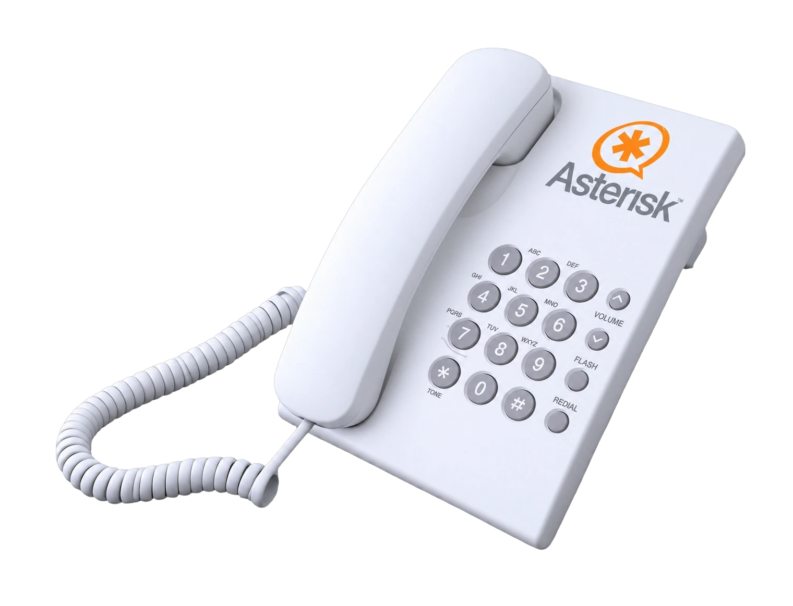
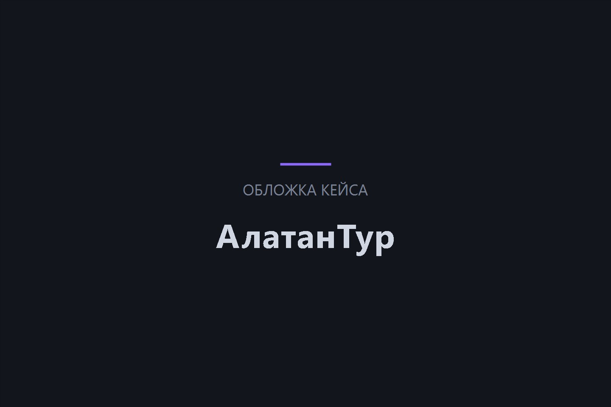
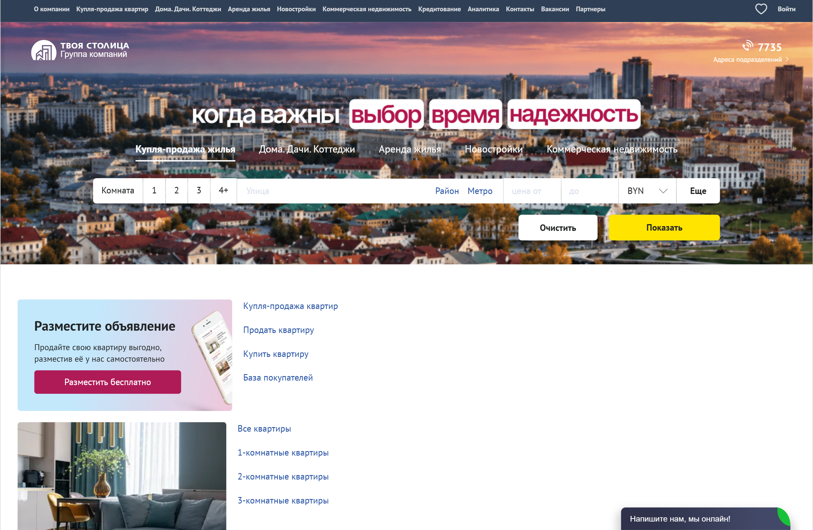
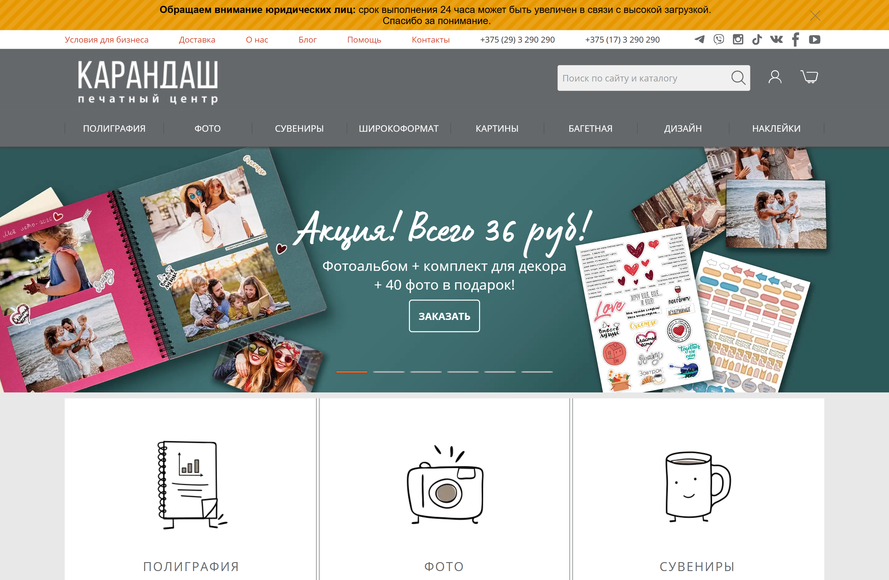
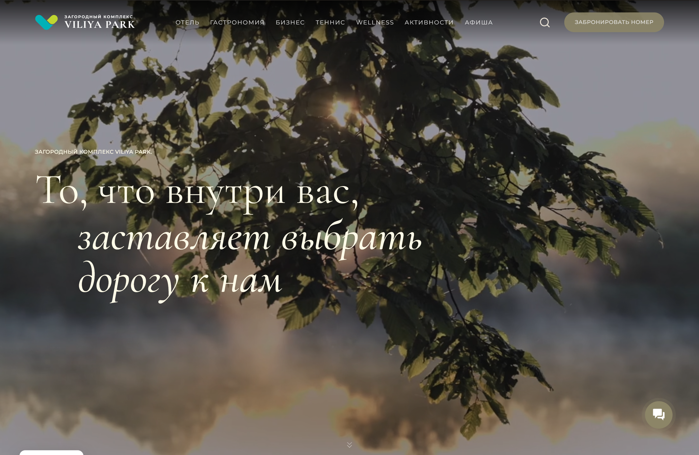
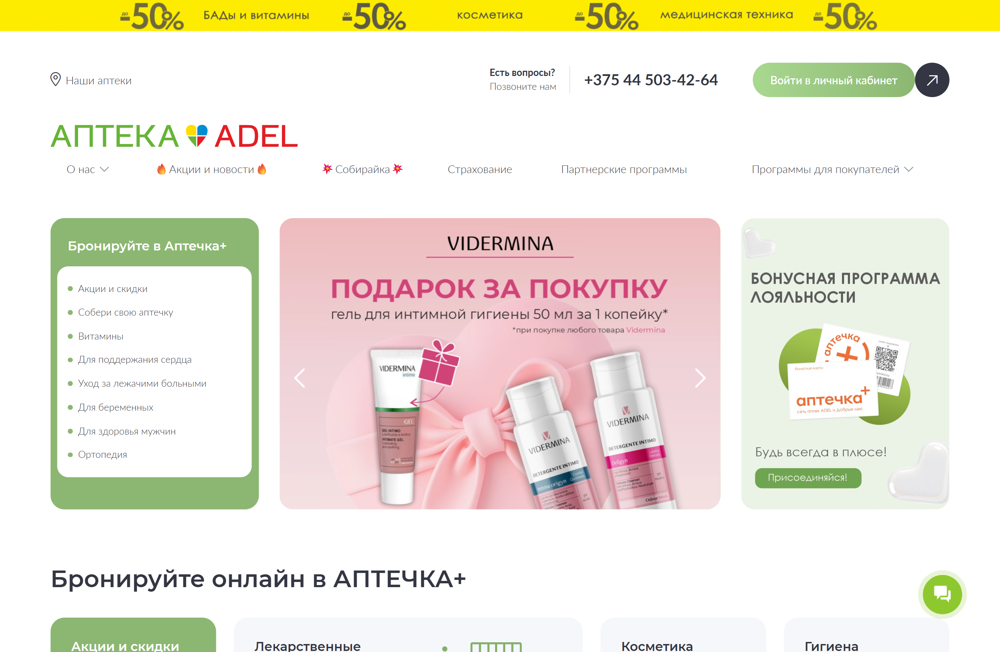
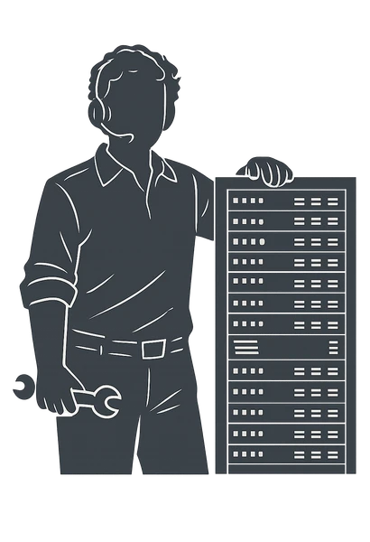
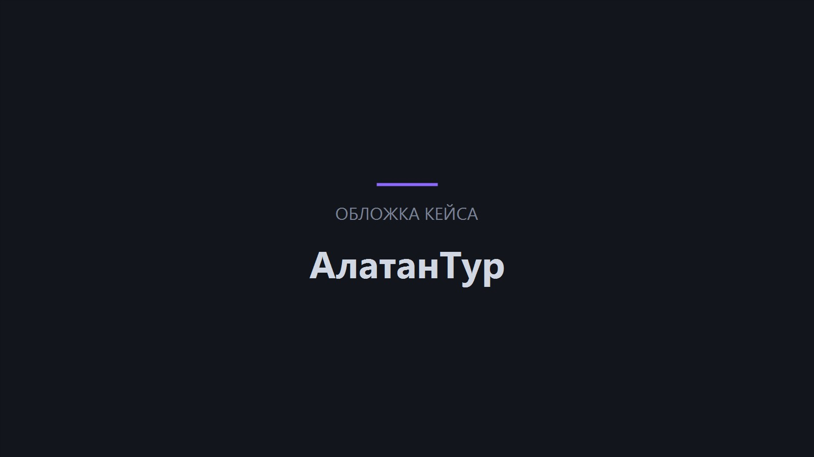

Маршрутизация под процессы
Настраиваем маршруты, меню, очереди и переадресацию под компанию.
- Маршруты
- Меню
- Очереди
Настраиваем VoIP-телефонию на Asterisk под процессы компании: маршрутизация вызовов, голосовые меню, очереди, переадресация и запись разговоров. Подключаем интеграции с CRM и аналитикой — связь работает так, как нужно бизнесу.

стоимость настройки
недель запуск телефонии
месяцев гарантия на работы


Настройка VoIP — это про то, как звонок доходит до нужного человека. Проектируем маршрутизацию, голосовые меню, очереди и переадресацию под процессы компании, подключаем запись разговоров и интеграции с CRM и аналитикой. Проверяем стабильность сценариев до запуска, чтобы связь работала предсказуемо и без ручных обходов.
Звонки уходят не тем специалистам: клиенты переключаются по кругу и бросают трубку
IVR устарел или отсутствует: операторы тратят время на типовые вопросы
В пиковые часы звонки теряются, а клиенты ждут слишком долго
CRM и телефония не связаны: нет записи разговоров и карточки клиента
Офисы и удалённые сотрудники не объединены в единую телефонную сеть
Станция настроена «как получилось»: непонятно, что и где меняется





Настраиваем маршруты, меню, очереди и переадресацию под компанию.
Подключаем CRM и аналитику — звонки и данные работают вместе.
Включаем запись и хранение разговоров для контроля качества.
Глубоко знаем нюансы настройки и интеграции IP-АТС.
Передовые технологии для стабильной работы и защиты данных.
Можно заключить договор на круглосуточную техподдержку.
Стоимость зависит от масштаба и задач. Точную смету фиксируем в договоре — до начала работ.
Маршрутизация, внутренние номера, голосовое меню и очереди, запись разговоров — типовой запуск за две недели.
Многоуровневые IVR, распределённые филиалы, сценарии для контакт-центра, интеграции с CRM и аналитикой — смета по проекту.
Шаг 1 из 4
Теперь у нас есть верхнеуровневые требования к вашему проекту. Заполните контактные данные ниже, и наши менеджеры оперативно свяжутся, чтобы сориентировать вас по стоимости и срокам реализации проекта.
Изучаем текущую схему связи, количество пользователей, нагрузку и требования к функционалу. Проектируем архитектуру телефонии и выбираем конфигурацию Asterisk.
Схема телефонии и смета
Проверяем готовность сети и серверной части, настраиваем сетевые параметры для стабильной передачи голосового трафика.
Готовая сеть и сервер
Устанавливаем и настраиваем станцию: внутренняя структура, номера, базовые сценарии обработки вызовов.
Работающая станция
Реализуем IVR, очереди, переадресацию, запись разговоров и подключаем CRM и аналитику под процессы компании.
Сценарии звонков и интеграции
Проводим тестовые звонки, проверяем сценарии, качество связи и устойчивость под нагрузкой, запускаем систему и сопровождаем первые дни.
Проверенная телефония в работе
Команда формируется индивидуально под каждый проект — состав и роли зависят от задач и сложности проекта
 Проектный менеджер
Координирует работу команды, контролирует сроки, коммуникацию и выполнение задач по проекту.
Проектный менеджер
Координирует работу команды, контролирует сроки, коммуникацию и выполнение задач по проекту.
 Бизнес-аналитик
Изучает задачи бизнеса, собирает требования и помогает определить структуру, функции и приоритеты проекта.
Бизнес-аналитик
Изучает задачи бизнеса, собирает требования и помогает определить структуру, функции и приоритеты проекта.

Системный инженер Настраивает IP-АТС, серверное окружение, маршрутизацию звонков и техническую инфраструктуру решения. Фронтенд-разработчик
Реализует интерфейсы, адаптивность и интерактивные элементы, обеспечивая корректную работу проекта на всех устройствах.
Фронтенд-разработчик
Реализует интерфейсы, адаптивность и интерактивные элементы, обеспечивая корректную работу проекта на всех устройствах.
 Бэкенд-разработчик
Отвечает за серверную логику, интеграции, базы данных и стабильную работу функционала системы.
Бэкенд-разработчик
Отвечает за серверную логику, интеграции, базы данных и стабильную работу функционала системы.
 QA-инженер (тестировщик)
Проверяет функциональность, находит ошибки и контролирует качество проекта перед запуском.
QA-инженер (тестировщик)
Проверяет функциональность, находит ошибки и контролирует качество проекта перед запуском.
 DevOps-инженер
Настраивает окружение, мониторинг, резервное копирование и обеспечивает надёжную работу проекта.
DevOps-инженер
Настраивает окружение, мониторинг, резервное копирование и обеспечивает надёжную работу проекта.
 Аккаунт-менеджер
Сопровождает клиента после запуска, помогает с новыми задачами, приоритетами и дальнейшим развитием проекта.
Аккаунт-менеджер
Сопровождает клиента после запуска, помогает с новыми задачами, приоритетами и дальнейшим развитием проекта.
Донастроить маршрутизацию, запись и интеграции без переделки системы. Текущую логику сохраняем, меняем только то, что мешает.
Убрать потери звука, обрывы и эхо на существующей системе. RTP, кодеки и сеть проверяются по факту, а настройку подбираем под провайдера и нагрузку офиса.
Подключить новые аппараты и гарнитуры к текущей АТС. Проверяем прошивки и права, чтобы новые устройства не конфликтовали с политикой системы.
Дать связь из дома и из поездок через SIP. Подключение идёт через защищённый канал, а права у сотрудника те же, что в офисе.
Настроить обмен звонками с Битрикс24 и другими системами. Записи и события попадают в CRM, а история разговоров видна из карточки клиента.
Ограничить внешние SIP-подключения и доступы к системе. Список разрешённых подключений ведём и обновляем вместе с вами, рабочие входы не страдают.
Официальные Платиновые партнёры Битрикс24 и Золотые партнёры 1С-Битрикс. Имеем сертификат Крупных корпоративных внедрений.


От лица компании ЗАО «СберЛизинг» выражаем искреннюю благодарность разработчикам компании ООО «Итач-софт» за их профессионализм и ответственность в создании нашего нового сайта, а также разработку калькулятора для расчета лизинговых платежей.
Благодаря Вашей компании ЗАО «СберЛизинг» получили качественный и функциональный сайт, который, на наш взгляд, достойно представляет нашу компанию, а также удобный инструмент для расчетов и будущих возможных интеграций в иные программные комплексы компании.

От лица нашей компании хочу сделать отзыв о совместно работе с ООО «Итач-софт».
Компания «Итач-софт» очень ответственно подходит к нашим проектам. Они сформировали команду с которой налажена очень быстрая обратная связь.
Все процессы максимально понятны и прозрачны. Мы добавлены на рабочий портал компании, где можем коммуницировать по задачам. Решать что-то по ходу и сразу. Делать быстрые созвоны. Это позволяет избежать затягивания разработки и принятия неправильных, неэффективных решений.

ОАО «БНБ-Банк» искренне благодарит компанию ООО «Итач-софт» за качественное и своевременное обслуживание сайта нашей организации.
За время работы сотрудники компании ООО «Итач-софт» проявили себя как добросовестные, исполнительные и отзывчивые специалисты. Все возникающие вопросы решались ими профессионально и в срок.
Особенно хочется отметить ответственное и внимательное отношение к требованиям и пожеланиям со стороны нашей компании.

Настоящим письмом выражаем свою искреннюю благодарность компании «Итач-софт» за отличную работу, которую проделала Ваша компания по созданию и запуску нашего сайта, а также по разработке собственной специализированной CRM-системы.
В работе с Вами мы увидели профессионализм, знание технологий, системный подход, соблюдение сроков, способность увидеть и понять наши потребности, и предложить лучшее решение.
Надеемся на дальнейшее плодотворное сотрудничество с Вами!
Для компаний любого масштаба: от небольшого отдела продаж до распределённых контакт-центров с филиалами в разных городах. Конфигурацию подбираем под нагрузку и задачи.
Да: добавление сотрудников, номеров и функций не требует переработки системы. Asterisk одинаково подходит и для небольшой команды, и для крупной организации.
При корректной настройке и спроектированной архитектуре станция стабильно держит большое число одновременных вызовов. Отказоустойчивость обеспечиваем на уровне серверов и сети.
В большинстве случаев — да. Совместимость серверов, телефонов и сетевого оборудования определяем на этапе анализа инфраструктуры.
Да: Asterisk позволяет реализовать индивидуальную логику обработки звонков, автоматизацию и интеграции. Доработки оцениваем отдельно и выполняем итерациями.
Опишите задачу — в течение часа ответим, как её решить, и рассчитаем предварительную стоимость.

Кейс · АлатанТур
Компания «АлатанТур» получила мощный инструмент для управления продажами и маркетингом: IP-АТС на базе Asterisk, интегрированная с Битрикс24 и ПО МастерТур. Проект позволил улучшить качество обслуживания клиентов, повысить эффективность внутренних процессов и обеспечить стабильную работу системы при постоянном развитии.

3
месяца — длительность проекта
5
специалистов в команде
Выполнена интеграция Битрикс24 с ПО МастерТур, которым компания управляет туристическими услугами. Данные о клиентах, турах и бронированиях автоматически синхронизируются между системами — процесс управления турами упростился, количество ручной работы сократилось.
Кейс · Твоя Столица
Для компании «Твоя столица» была внедрена IP-АТС на базе Asterisk, что позволило оптимизировать телефонную связь, улучшить качество обслуживания клиентов и снизить затраты на связь. Масштабируемость новой системы обеспечивает гибкость в адаптации к росту и изменяющимся потребностям бизнеса.
1
месяц — длительность проекта
3
специалистов в команде
Снижение затрат на телефонную связь благодаря использованию IP-АТС и оптимизации управления вызовами.
Улучшение качества клиентского обслуживания за счет сокращения времени ожидания и повышения эффективности работы операторов.
Повышение эффективности внутренних коммуникаций и гибкости системы, что позволяет компании адаптироваться к изменениям и расти.
Внедрение IP-АТС на базе Asterisk для компании «Твоя столица» стало ключевым шагом в модернизации их коммуникационной инфраструктуры. Новая система обеспечила более качественное и экономичное управление телефонной связью, улучшила клиентский сервис и подготовила компанию к будущим вызовам и возможностям.
Кейс · Карандаш
Для компании «Карандаш» была внедрена IP-АТС на базе Asterisk, что позволило оптимизировать телефонную связь, улучшить качество обслуживания клиентов и снизить затраты на связь. Масштабируемость новой системы обеспечивает гибкость в адаптации к росту и изменяющимся потребностям бизнеса.
1
месяц — длительность проекта
3
специалистов в команде
Снижение затрат на телефонную связь благодаря использованию IP-АТС и оптимизации управления вызовами.
Улучшение качества клиентского обслуживания за счет сокращения времени ожидания и повышения эффективности работы операторов.
Повышение эффективности внутренних коммуникаций и гибкости системы, что позволяет компании адаптироваться к изменениям и расти.
Внедрение IP-АТС на базе Asterisk для компании «Карандаш» стало ключевым шагом в модернизации их коммуникационной инфраструктуры. Новая система обеспечила более качественное и экономичное управление телефонной связью, улучшила клиентский сервис и подготовила компанию к будущим вызовам и возможностям.
Кейс · Вилия Парк
Проект по внедрению IP-АТС на базе Asterisk и интеграции с Битрикс24 для ООО «Косвик» был успешно реализован, что позволило компании улучшить внутреннюю и внешнюю коммуникацию, повысить эффективность работы и снизить затраты на связь. Постоянная техническая поддержка и обновление системы обеспечивают бесперебойную работу и стабильное развитие бизнеса.
1
месяц — длительность проекта
4
специалистов в команде
Повышение эффективности работы сотрудников за счет интеграции телефонной системы с CRM-системой, что позволило оптимизировать процессы обработки звонков и взаимодействия с клиентами.
Снижение затрат на связь благодаря внедрению IP-АТС, которая позволяет экономить на междугородних и международных звонках.
Улучшение клиентского сервиса через автоматизацию процессов и улучшение качества обработки звонков.
Кейс · ADEL
Аптеки ADEL – крупнейшая в Беларуси сеть аптек. Позиция лидера на фармацевтическом рынке страны определяет высокие стандарты к качеству обслуживания покупателей. Высокая скорость коммуникации, фиксация всех поступающих обращений и обеспечение своевременного предоставления обратной связи – те требования, с которыми заказчик обратился к нам за внедрением и настройкой АТС на базе Asterisk.
1
месяц — длительность проекта
2
специалистов в команде